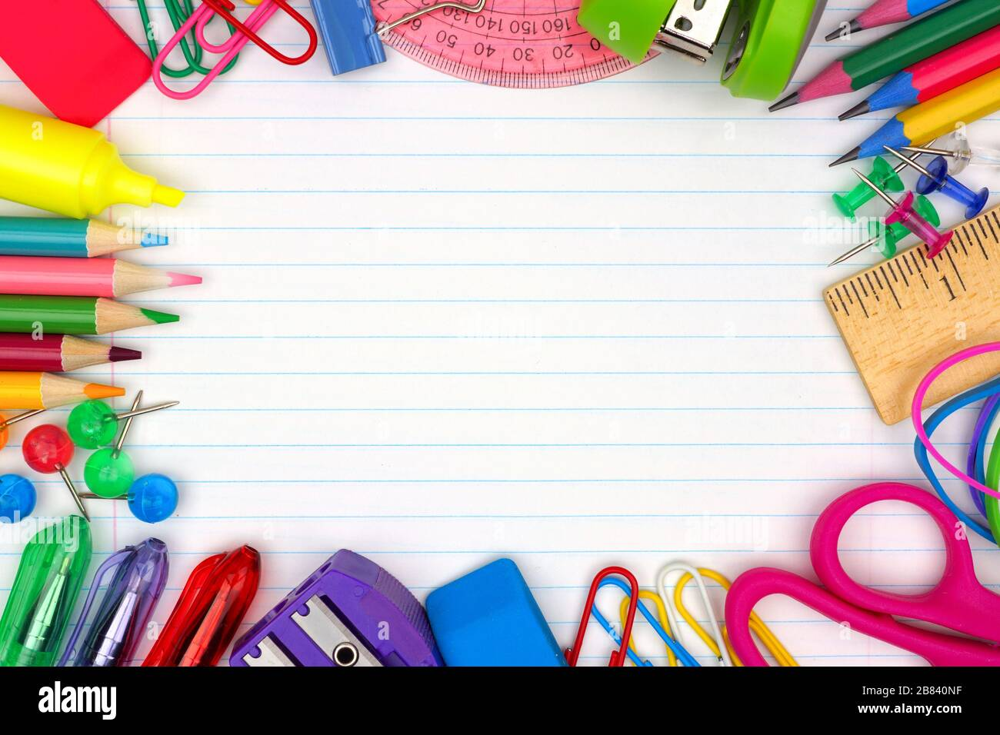
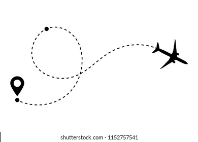

Parcours Scolaire
Pour mon parcours scolaire j'ai eu mon brevet avec mention bien puis j'ai fait un bac scientifique auquel j'ai eu mention assez bien et enfin j'ai integrer la première de BTS SNIR à Jules Ferry

Parcours dans l'informatique
Je vais vous parler de mon parcours dans l'informatique ce parcours est dispatché en plusieurs chapitres. Le premier chapitre je le nommerai...
